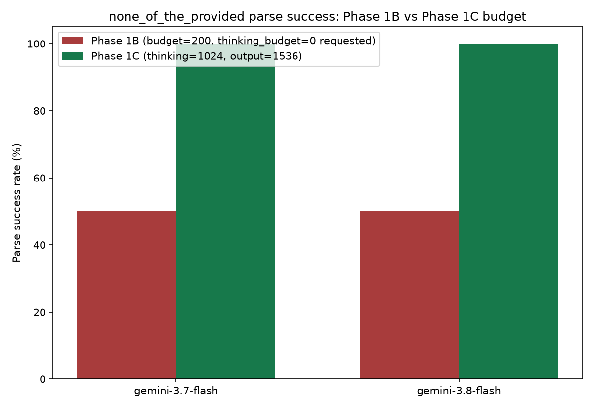

An engineering/measurement validation, not a model comparison: same 10 questions, same models, same prompt — only the token budget changes. Designed to answer one question before trusting Phase 1B's truncation-driven parse failures as a real signal.
2 mcq + 1 roman_numeral (Phase 1A) + 10 none_of_the_provided (Phase 1B) = 13/13, no unexplained gap. All 13 are Gemini-only (Claude never passed pre-flight in either phase). Full table: results/behavioral/phase1c/parse_failure_audit.csv.
finish_reason:
MAX_TOKENS, cut off mid-preamble before the JSON answer completed. Not 13 different problems —
one problem, thirteen occurrences.
Confirmed via Gemini's own documentation (not assumed): max_output_tokens
"sets the maximum number of tokens a response can generate, including thought tokens." Thinking
and the visible answer share one ceiling, not two independent budgets.
The installed SDK's own docstring: thinking_budget: 0 is DISABLED. Phase 1A/1B
requested exactly that. Empirically, gemini-3.7/3.8-flash still spent 17–190 tokens thinking anyway —
the spec'd behavior was not fully honored by these models.
thinking_budget = 1024 · max_output_tokens = 1536
(512-token headroom above the thinking cap for a ~10-token JSON answer)
Prompt template, models, and question set held exactly identical to Phase 1B — only these two numbers changed, so any difference can be attributed to the budget.

| Model | Phase 1B parse success | Phase 1C parse success | Recovered | Avg thinking tokens |
|---|---|---|---|---|
| gemini-3.7-flash | 50% | 100% | 5/5 | ~157 → 251 (of 1024) |
| gemini-3.8-flash | 50% | 100% | 5/5 | ~157 → 251 (of 1024) |
none_of_the_provided — but that number came
from only the 5/10 responses per model that happened to finish before the budget ran out. With all 10/10
now visible, true accuracy is 17/20 (85%). This is exactly the kind of bias a smoke test is meant
to catch before it reaches a scaled result.
medmcqa::18c1a5f9 — was answered incorrectly by
both Gemini models, with the same wrong option (B instead of the correct A). This persists
under a generous budget, so per the Phase 1C interpretation rule it is not dismissed as a budget
artifact — it's flagged for subsequent behavioral analysis. Both models appear to prefer a
clinically-plausible-sounding distractor over the correct-but-generically-labeled
"None of the provided options" choice: a genuine decision-boundary failure, the exact phenomenon this
perturbation was designed to probe.
10/10 previously-unparseable responses became parseable purely by raising the shared budget, prompt and model held fixed. Reclassified from "behavioral-instability signal" to budget-associated parse failure / inference-configuration artifact.
The 85% accuracy and the shared wrong-answer case persist under an adequate budget. Option-position stability (letter never moved) is being tracked as distinct from answer-content stability (whether the model actually recognized the right choice) — conflating the two would have hidden this finding.
results/behavioral/phase1c/phase1c_summary.md.
Gemini's pipeline now measures none_of_the_provided correctly (truncation resolved) — that is not the same claim as "the model performs well," and the 85%-accuracy / shared-error finding should carry forward rather than be treated as noise. Claude remains entirely untested and unavailable.